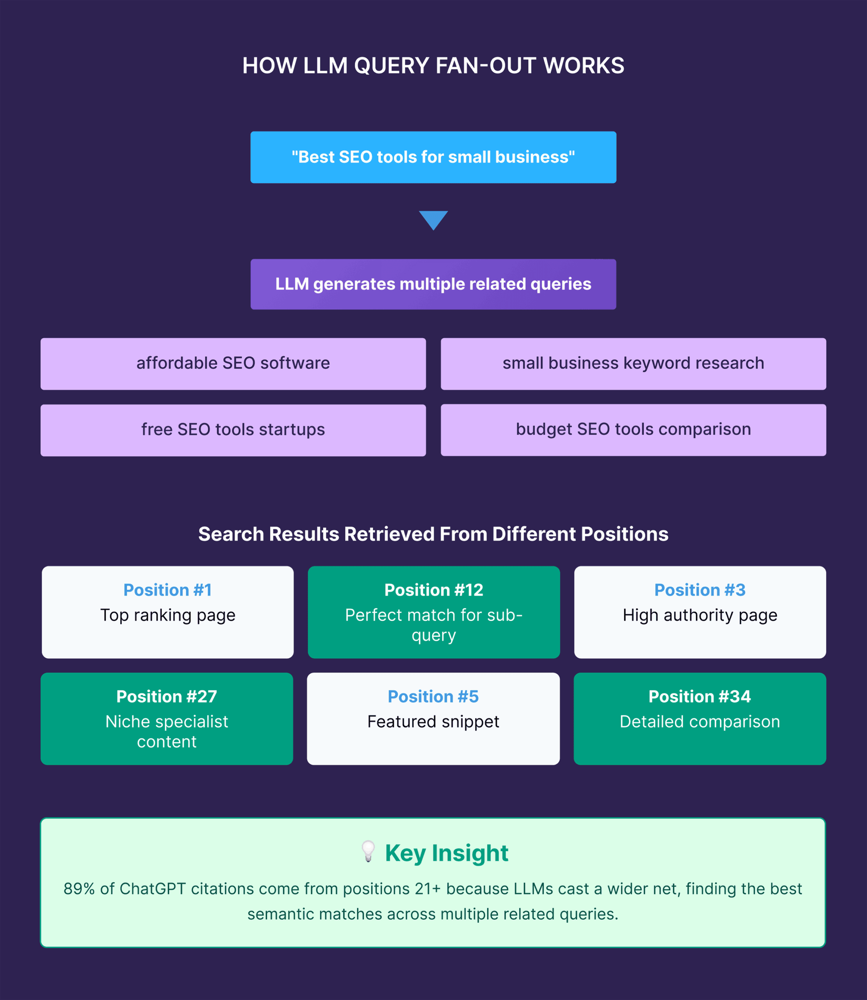

解码LLM：怎么在生成式AI的搜索结果里被看见
作者: 老白（邻里GEO架构师）
·
·
阅读时长: 9 分钟
结论先行 (Executive Summary)：
本文拆解生成式AI搜索的检索、理解、筛选和生成机制，说明企业内容如何通过可访问、可理解、可引用和可信证据获得可见性，并成为AI答案材料，而不只停留在传统排名里。
一、核心结论：被LLM看见，意味着成为答案结构的一部分
在生成式AI搜索结果里被看见，不只是网页被抓取或排名靠前，而是你的品牌、页面或观点能被AI系统检索、理解、筛选、引用，并最终进入用户看到的生成式答案。LLM不会像人一样完整阅读官网，它会寻找能组成答案的结构化材料。
因此，企业要解决的不是“让AI神奇地推荐我”，而是让自己的内容满足四个条件：能被访问，能被理解，能被拆出来引用，能被来源和证据支持。只有这四个条件同时成立，AI可见性才有稳定基础。
二、生成式AI搜索结果是怎么形成的

生成式AI搜索会把网页、知识库和外部来源拆成可用于回答问题的候选材料。不同产品的技术细节不同，但生成式AI搜索通常会经历几个相似环节：理解用户问题，检索候选资料，判断资料相关性，抽取关键片段，重组为答案，并在需要时附带来源链接。RAG系统的基本思想，就是用检索到的外部资料来支撑生成答案。
这意味着网页不是直接“变成答案”，而是先成为候选材料。候选材料能否进入答案，取决于它和问题的匹配度、内容结构、来源可信度以及是否能提供清楚结论。
| 环节 | AI在判断什么 | 企业内容要提供什么 |
|---|
| 检索 | 哪些页面相关 | 清晰标题、可抓取页面和主题一致性 |
| 理解 | 页面在说什么 | 定义、H2、FAQ和实体关系 |
| 筛选 | 哪些来源可信 | 证据、作者、更新日期和外部引用 |
| 生成 | 如何组成答案 | 可独立引用的判断句和步骤 |
三、为什么传统SEO不能直接等于AI可见性
传统SEO让页面更容易被搜索引擎发现、索引和排序，这是AI可见性的基础。但生成式AI搜索多了一层答案生成逻辑：系统不只返回链接，还要决定哪些材料适合被合成进答案。
一个页面即使有排名，也可能因为表达太营销化、结构不可拆、缺少证据或与问题不匹配而不被引用。反过来，结构清楚、证据明确、回答具体的页面，即使不是唯一入口，也更容易成为AI整理答案时的材料。
四、影响LLM可见性的四个核心变量
LLM可见性可以拆成四个变量：可访问性、可理解性、可引用性和可信度。可访问性解决页面能否进入候选集；可理解性解决模型是否知道你是谁；可引用性解决内容是否能被摘取；可信度解决答案是否敢采用。
这四个变量缺一不可。只有技术可访问但内容空泛，AI会找不到答案片段；内容写得专业但没有清晰结构，AI可能无法稳定抽取；观点很多但缺少证据，AI可能不会把它作为可信来源。
- 可访问性：页面能被正常抓取，核心内容不是只藏在图片或复杂交互里。
- 可理解性：品牌、产品、场景和概念有稳定定义，不同页面不互相冲突。
- 可引用性：重要结论能以段落、列表、表格或FAQ形式独立成立。
- 可信度：关键判断有作者、日期、来源、案例或公开证据支持。
五、企业应该如何提升生成式AI搜索可见性
提升AI可见性应从核心问题集开始，而不是从批量写文章开始。企业先列出用户会向AI提出的真实问题，例如“某类产品怎么选”“哪些供应商适合中小企业”“某品牌适合什么场景”。然后检查官网是否有页面能直接回答这些问题。
下一步是把内容改成答案源：首段给结论，正文解释机制，表格区分概念，FAQ覆盖追问，案例和参考文献提供证据。这样的页面既适合人读，也更适合AI抽取。
| 优先级 | 要改的内容 | 目标 |
|---|
| 高 | 品牌定义页和核心服务页 | 让AI准确识别企业实体 |
| 高 | 场景页和问题页 | 进入真实用户问题的候选集 |
| 中 | 案例页和对比页 | 提供推荐和采信依据 |
| 中 | FAQ和术语页 | 补齐可独立引用的知识单元 |
六、如何判断你是否已经被AI看见
判断AI可见性不能只测一个品牌词。品牌词问题往往已经带有明确对象，更应该测试品类词、痛点词、竞品比较、购买建议和本地化场景。只有在这些非品牌问题中出现，才说明品牌进入了更靠前的AI认知层。
记录时要保留问题、模型、时间、答案、引用来源和人工判断。重点看四件事：是否提到品牌，是否描述准确，是否给出来源，是否进入推荐语境。持续测试才能区分偶然出现和稳定可见。
七、结论：GEO的目标是降低AI理解成本
生成式AI搜索不会简单照搬传统排名，也不会无条件采纳官网自述。它会在可访问的信息中寻找更适合回答用户问题的材料。企业要做的是减少模型理解和引用的阻力。
因此，GEO不是操控AI答案，而是把真实能力表达清楚，把证据公开化，把内容组织成可理解、可引用、可验证的结构。这样，企业才更可能在生成式AI搜索结果里被正确看见。
FAQ
Q1：在生成式AI搜索里被看见是什么意思？
它不是单纯指网页被抓取，也不是传统排名第一，而是品牌或内容进入AI生成答案的材料范围。具体表现包括被提及、被正确解释、被引用为来源，或在解决方案和供应商建议中出现。企业应同时观察出现次数和语义质量，避免把偶然提及当成稳定可见。
Q2：传统SEO还有必要做吗？
仍然有必要。页面可抓取、可索引、标题清楚、内容有用，是进入搜索和AI候选资料的基础。但SEO不能保证AI一定引用，因为AI还会判断内容是否适合回答问题。更准确的理解是，SEO解决发现和索引，GEO进一步解决理解、采信和引用。
Q3：为什么我的官网有内容，AI还是不提到我？
常见原因是内容没有对应真实问题，或者只介绍公司优势，没有提供可抽取的答案。AI更容易使用定义清楚、结构稳定、有证据支持的内容。如果官网只有宣传语、产品卖点和泛泛案例，模型可能知道你存在，却不知道在什么问题下应该推荐你。
Q4：AI可见性可以通过发更多文章解决吗？
不能只靠数量解决。更多文章可能扩大覆盖面，也可能制造重复和冲突，增加模型理解成本。优先级应该是先统一品牌定义、核心服务、适用场景和证据口径，再围绕真实问题补内容。结构清楚的少量关键页面，通常比大量模板文章更有价值。
Q5：怎么设计AI搜索可见性测试问题？
问题集要覆盖用户旅程，而不只是品牌词。可以包括品类定义、问题诊断、方案比较、品牌对比、价格咨询、采购建议和本地场景。每个问题都要固定措辞，并定期在同一批AI入口中测试。这样才能判断变化来自内容优化，还是来自随机回答波动。
Q6：被AI引用一定会带来流量吗？
不一定。生成式AI答案可能满足部分用户需求，点击行为会因产品形态和问题类型而变化。但引用仍有价值，因为它会影响用户对品牌的初步认知。企业评估时不要只看流量，还要看品牌是否进入候选清单、描述是否准确、销售线索质量是否变化。
Q7：GEO会不会变成操控AI答案？
不应该。健康的GEO不是伪造声量或污染答案，而是让AI更容易找到真实、专业、可验证的信息。企业要做的是统一定义、补充证据、改善结构和纠正错误来源。只要内容本身真实有用，GEO就是知识治理，而不是黑箱技巧。